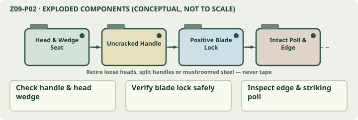

Z09-P02 · Tools and construction · New manuscript
Inspect cutting edges, handles and locks before every job
Catch loose heads, cracked handles, worn folder locks and chipped steel before applying force.
When it applies · Pre-use inspection of every knife, folding saw, hatchet, hammer, wedge or multi-tool prior to field or home use.
Equipment · Tool to be inspected, daylight or clear task lighting and clean cloth.

Actions
- Check wooden or composite handles for hairline splits, rot, wobble or loose head wedges; never swing an axe or hammer with a moving head.[K02, K03, K04]
- Test folding-knife and folding-saw locking mechanisms slowly with fingers completely clear of the closing arc to confirm zero blade play or slip.[K01, K02, ED]
- Inspect metal edges and striking faces for cracks, chips, heavy rust or mushroomed rims that can snap or throw metal shards under load.[K02, K12]
Failure recognition · Opening a gritty folding knife without checking whether the liner lock engaged, causing the blade to snap shut on fingers during a push cut.[K01, K02]
Verify · Confirm tight head seating, sound uncracked handle, positive lock engagement and clean intact blade edge before starting work.[K01, K02, K03, ED]
Stop or change course · Immediately tag out and retire any tool with a loose head, cracked handle, unreliable lock or mushroomed striking poll—never patch a broken axe handle with tape.[K02, K04, K12]
Evidence and editorial notes
- K01 · OSHA · Hand and Power Tools Safety and Health Topics (current web edition)
- Section: Hand Tools > General Safety Rules · Conditions: Use of knives, saws, axes, hammers and hand tools
Support: Keep hand tools in good condition, use the right tool for the job, examine each tool for damage before use, operate according to instructions and wear appropriate personal protective equipment.
Limitations: General occupational rules do not replace task-specific forestry or field-tool training. · Conflicting evidence: None; baseline tool safety framework.
Editorial note: Anchors tool selection, pre-use inspection and operating boundary cards in Z09. · Specialist reviewer: Tool safety and occupational safety
Primary source · checked 2026-11-24 - K02 · OSHA · Hand and Power Tools (OSHA 3080) (agency PDF)
- Section: Hand Tools > Knives, Chisels, Impact and Wrenches · Conditions: Manual cutting, striking and prying operations
Support: Direct cutting blades away from the body and bystanders, never use cracked wooden handles or mushroomed striking heads, and do not substitute wrenches or blades as pry bars.
Limitations: Does not specify material tensile ratings for improvised handles. · Conflicting evidence: None; directly informs safe cutting and impact-tool failure cards.
Editorial note: Prevents blade slip, splintered-handle and spalling-metal injuries. · Specialist reviewer: Tool safety and wilderness medicine
Primary source · checked 2026-11-24
Current assessment · A04-K02 (2026-11-25) · Open: support partial or missing (A04): Supports misuse and defective equipment limits in occupational work. Exact cutting lane and equipment guidance varies by tool kept under specialist review. Limits: Specialist review PENDING (Tool safety and wilderness medicine); publication HOLD. All release decisions pending. - K03 · USDA Forest Service · Handtools for Trail Work (0523-2810-MTDC) (agency handbook)
- Section: Tool Selection, Inspection and Safe Transport · Conditions: Trail and campsite hand tools (axes, saws, shovels, pulaskis, wedges)
Support: Inspect handles for splits, loose heads and secure wedges before every use; sheath sharp edges during carry and maintain a clear work circle around swinging tools.
Limitations: Forestry guidelines apply to maintained commercial tools; improvised stone or salvaged blades carry higher failure risk. · Conflicting evidence: None; aligns with OSHA-3080.
Editorial note: Grounds woodworking, swinging-tool clearance, carrying and maintenance cards. · Specialist reviewer: Forestry tool safety and trail maintenance
Primary source · checked 2026-11-24 - K04 · USDA Forest Service · Handtools for Trail Work (0523-2810-MTDC) (agency handbook)
- Section: Sharpening, Filing and Handle Maintenance · Conditions: Maintaining cutting edges and wood tool handles in field or shop
Support: Secure the tool firmly before filing or honing, keep fingers behind file guards, preserve factory bevel geometry without overheating steel and replace loose or cracked handles rather than taping them.
Limitations: Field touch-up honing does not correct chipped, cracked or heat-annealed steel blades. · Conflicting evidence: None; separates routine edge maintenance from unsafe handle patching.
Editorial note: Guides sharpening, rust prevention and handle-failure retirement cards. · Specialist reviewer: Tool maintenance and forestry safety
Primary source · checked 2026-11-24 - K12 · USDA Forest Service · Handtools for Trail Work (0523-2810-MTDC) (agency handbook)
- Section: Wedges, Chisels and Striking Surfaces · Conditions: Splitting deadwood or driving stakes with hand tools
Support: Avoid steel-on-steel striking of hardened axe polls or unguarded wedges that can chip metal shards; use wooden mallets or purpose-designed striking faces and retire mushroomed heads.
Limitations: Improvised stone hammers fracture unpredictably and throw sharp flakes. · Conflicting evidence: None; informs baton/wedge/mallet safety cards.
Editorial note: Guides safe splitting, stake driving and struck-tool failure recognition. · Specialist reviewer: Tool safety and materials safety
Primary source · checked 2026-11-24
Source lineage · OSHA 3080 and USFS trail handtools; new manuscript · Classification · New manuscript.